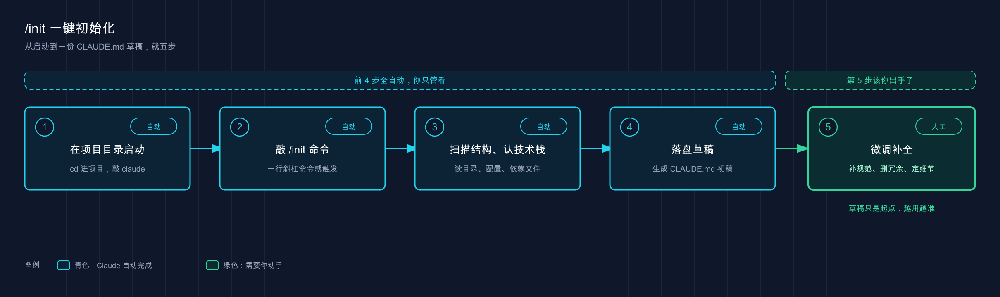

📚 系列导航：上一篇 11 网页版与云端 带你跳出终端，在浏览器和云端环境里用上了 Claude Code。这一篇回到本地、回到一个最该养成的习惯——进新项目第一件事，敲
/init，让 Claude 自己扫一遍代码库、把项目说明书写出来。下一篇：13 项目结构 。
兄弟们，先讲个常见的蠢操作。
刚上手 Claude Code 那阵，接手一个之前同事留下的 Node 后端项目，没跑 /init 就直接开干。第一次问「测试怎么跑」，它去翻了一圈 package.json 才回你；过了二十分钟开个新会话，同样的问题它又从头翻了一遍；下午换个任务，它第三次问「这个项目用的是 npm 还是 pnpm」。
到这一刻就真被它看烦了——不是它笨，是没给它一份「项目说明书」，它每次都得从零摸索一遍。等学会进项目先敲一个 /init，这些重复全没了：它一次性把项目摸清、写成一份 CLAUDE.md 存下来，之后每次会话开局就自带这份上下文，再也不用反复解释。
说白了，/init 就干一件事：把「Claude 每次重新认识你的项目」变成「认识一次，长期记住」。这一篇就讲清楚它怎么用、生成出来长啥样、到底帮你省了什么。
看完这一篇，你会拿到：
- 搞懂
/init解决的核心痛点：从「每次重新摸索」到「一次生成长期记忆」 - 一套照着敲就行的操作：在项目根目录启动
claude，敲/init - 知道它背后做了什么：扫描结构、识别技术栈、生成 CLAUDE.md 草稿
- 看懂生成出来的 CLAUDE.md 大致长什么样、每一块是干嘛的
- 一个关键认知：
/init只是起点，草稿得人工补一刀（怎么补，留给第 18 篇）
01 为什么要有 /init：Claude 的「失忆」问题
先说结论：Claude Code 每次开新会话，都是「失忆」状态——它不记得你上次跟它说过什么。
这不是 bug，是它的设计。官方文档里写得明明白白：
每个 Claude Code 会话都从一个全新的上下文窗口开始。
类比：每天来上班都换一个新实习生。 这实习生本事不小，但有个毛病——今天教会他的事，明天来的是另一个人，全得重教。你跟他讲「我们用 pnpm 不用 npm」「测试在 tests/ 目录」「提交前要跑 lint」，第二天新的一个来了，又得从头讲一遍。
这就是没有 CLAUDE.md 时的真实状态。前面那个 Node 项目踩的坑就是这么来的——不是 Claude 记性差，是它压根没有跨会话的记忆载体。
那怎么办？官方给了两套跨会话传递知识的机制，这一篇只讲第一套：
| 机制 | 谁来写 | 装的是什么 |
|---|---|---|
| CLAUDE.md 文件 | 你（可让 /init 起草） | 指令和规则：项目架构、构建命令、约定 |
| 自动记忆（Auto Memory） | Claude 自己 | 它工作中攒下的经验、调试心得 |
注意自动记忆有个硬限制：每个会话只加载前 200 行或 25KB，超出部分不进上下文——所以靠自动记忆塞太多东西是靠不住的，CLAUDE.md 才是主力。
CLAUDE.md（项目记忆文件）就是那份写给「每天换人的实习生」看的入职手册——你提前写好放在项目里，Claude 每次开局先读一遍，立刻就「记起」这个项目是怎么回事。
而 /init，就是帮你把这份手册的初稿一键生成出来的命令。
💡 一句话总结：Claude 每次开会话都「失忆」，CLAUDE.md 是它跨会话的记忆载体——
/init帮你把这份记忆的初稿一键写出来。
02 /init 是什么：让 Claude 自己写自己的说明书
/init 是 Claude Code 内置的一个斜杠命令（slash command，输入框里以 / 开头的指令）。
它干的事，用一句话概括：让 Claude 自己扫描你的项目，生成一份专属于这个项目的 CLAUDE.md 草稿。
官方文档对它的描述很精准：
运行
/init自动生成起始 CLAUDE.md。Claude 分析你的代码库并创建一个包含构建命令、测试指令和它发现的项目约定的文件。
类比：让新员工自己写一份入职手册。 一般入职手册是老员工写好给新人看的。但 /init 反过来——它让这个「新来的」先把整个项目自己读一遍，然后把读到的东西（用什么技术、目录怎么分、命令怎么跑）整理成一份手册。读得对不对，你回头审一眼就知道。
这么设计的好处很实在：项目里的客观事实（技术栈、目录结构、有哪些脚本命令），Claude 自己扫一遍就能扒出来，根本不用你一个字一个字敲。你省下的力气，留着去补那些它扫不出来的东西（比如团队的分支命名规范），就够了。
什么时候该用它？一般有这几个触发时机：
- 接手一个别人留下的项目——你自己都没摸熟，正好让它先扫一遍给你打底
- 自己的项目还没有 CLAUDE.md——一直在裸用，是时候补上了
- clone 下来一个开源项目想改改——先
/init拿到项目地图，再动手
💡 一句话总结：
/init让 Claude 把项目自己读一遍，把客观事实整理成 CLAUDE.md 草稿——你省下扒事实的力气，专心补它扫不出的东西。
03 怎么跑：进目录、启动、敲命令
操作简单到有点反高潮——启动 claude 后，在输入框里敲 /init 就完事。
第一步：在项目根目录启动 Claude Code。
这一步是关键，一定要 cd 进项目的根目录再启动，不能在桌面或主目录裸启。第 07 篇就强调过：你在哪启动，Claude 就把哪儿当工作区、读哪儿的文件。在主目录跑 /init，它扫的是你一堆乱七八糟的个人文件，扫了个寂寞。
cd /path/to/your-project
claude
第二步：在输入框里敲 /init，回车。
/init
就这样。接下来你什么都不用做，剩下全是 Claude 自己跑——整个过程无需手动操作，它会自行分析、自动输出。
那它在背后到底干了啥？看它跑过很多次，大致是这么个流程：

整件事串成一条线就是：在项目目录里启动 claude → 敲 /init → Claude 扫描项目结构、识别技术栈 → 落盘一份 CLAUDE.md 草稿 → 你再人工微调补全。前四步基本是自动的，最后那步「人工微调」才是把草稿变成好手册的关键，这一篇先点到，第 18 篇专门讲。
官方对这一步的说法是「分析你的代码库」。具体扫的是哪些文件，落到实处大致是这几类（跑下来它基本都会翻）：
- 依赖清单：
package.json（Node）、requirements.txt（Python）、pom.xml（Java）这类——用来判断技术栈和能跑的命令 - 现有文档：
README之类——理解项目是干什么的 - 配置文件 + 代码结构：摸清目录怎么分、入口在哪
⚠️ 一个容易忽略的细节：如果项目里已经有 CLAUDE.md，
/init不会粗暴覆盖它。官方文档明确写了——这时它会建议改进而不是覆盖。在一个已经写好 CLAUDE.md 的项目里再敲一次/init，本来还担心白写了，结果它老老实实列了几条「这里可以补充」的建议，原文一行没动。这点设计相当贴心。
💡 一句话总结：
cd进项目根目录、启动claude、敲/init，剩下交给它自动扫——已有 CLAUDE.md 时它只建议改进、不覆盖。
04 生成出来长什么样：CLAUDE.md 草稿拆解
跑完 /init，项目根目录下就多了一个 CLAUDE.md 文件。打开它，你会看到一份结构清晰的 Markdown。
类比：一份标准的项目说明书。 它不是流水账，而是分好块的——项目是干嘛的、用了什么技术、目录怎么分、命令怎么敲、有什么约定。一个新人（包括下一次会话「失忆」后的 Claude）扫一眼这几块，就知道这项目怎么回事了。
生成的内容通常覆盖这么几块（具体字段 Claude 会按你项目实际情况来，下面是个典型样子）：
# 项目名称
## 项目概述
简述这个项目是做什么的、核心功能是什么。
## 技术栈
- Frontend: React + TypeScript
- Backend: Node.js + Express
- Database: PostgreSQL
## 目录结构
- `src/components/` - React 组件
- `src/api/` - API 层
- `tests/` - 测试文件
## 常用命令
- 启动开发服务器：`pnpm dev`
- 运行测试：`pnpm test`
- 代码检查：`pnpm lint`
## 开发规范
- 使用 TypeScript strict 模式
- 提交前先跑 `pnpm test`
逐块说一下它各自的价值——这正是 Claude 以前要反复问你的那些东西：
| 这一块 | 装的是什么 | 它替你省掉的重复 |
|---|---|---|
| 项目概述 | 项目目的、核心功能 | 不用每次解释「这项目是干嘛的」 |
| 技术栈 | 用了什么框架、语言、数据库 | 不用每次问「这是 React 还是 Vue」 |
| 目录结构 | 关键目录各放什么、入口在哪 | 不用每次找「API 代码在哪个文件夹」 |
| 常用命令 | 启动、测试、检查怎么敲 | 不用每次翻 package.json 找命令 |
| 开发规范 | 项目约定（如 strict 模式） | 不用每次叮嘱「记得开严格模式」 |
看明白没？前面那个 Node 项目里被问烂的「测试怎么跑」「用 npm 还是 pnpm」，全被「常用命令」「技术栈」这两块一次性吃掉了。手册写好往那一放，Claude 开局自己读，这些重复对话直接清零。
至于这个文件该放哪——官方给的位置是项目根目录的 ./CLAUDE.md（或者 ./.claude/CLAUDE.md）。/init 默认就帮你放对地方了，你不用操心路径。更细的层级关系（用户级、项目级怎么叠加），留到第 18 篇展开。
💡 一句话总结：生成的 CLAUDE.md 分「概述 / 技术栈 / 目录 / 命令 / 规范」几块，每一块都精准对掉一类以前反复问的重复——文件放哪
/init帮你搞定。
05 关键认知：/init 是起点，不是终点
这是这一篇最想让你记住的一句话：/init 生成的是草稿，不是终稿。
为什么必须人工补一刀？因为有些东西，Claude 扫遍整个代码库也扫不出来——它们根本不在代码里，只在你和团队脑子里。
举几个 Claude 自己绝对推断不出来的例子：
- 分支命名规范：你们约定
feature/xxx、fix/xxx，这写在哪个文件里？没有。Claude 扫不到。 - 部署流程：合并到
main自动触发部署、还是要手动点一下？项目代码里看不出来。 - Code Review 要求：「PR 必须两人 approve」「核心模块改动先在 Plan Mode 出方案」——这是团队的隐性约定。
- 业务背景：为什么这块要这么设计、哪个模块碰了容易出事——这些「为什么」藏在你脑子里。
正确的姿势是迭代优化，而非一次写死。
前面那个 Node 项目就是反面教材的对照组：/init 完就以为万事大吉，没补。结果它生成的「常用命令」里漏了一条自己写的部署脚本（因为那脚本藏在 scripts/ 里没在 package.json 暴露），Claude 自然没扫到。手动往 CLAUDE.md 里加一行「部署用 ./scripts/deploy.sh」，这才算补全。所以正确的习惯是固定的：/init 跑完，立刻通读一遍，把它扫不出的硬约束手动补进去。
所以正确的姿势是这样的对比：
| ❌ 错误用法 | ✅ 正确用法 |
|---|---|
/init 跑完就不管，当终稿用 |
/init 跑完通读一遍，当草稿审 |
| 指望它把团队所有约定都扫出来 | 把它扫不出的硬约束（分支、部署、Review）手动补上 |
| 生成完一次写死，从此不动 | 随项目演进持续迭代、删掉过时的 |
记住这个分工就行：/init 负责把客观事实快速扒出来打底（这块它强），你负责把主观约定和业务背景补进去（这块只有你知道）。两边配合，才是一份真正好用的 CLAUDE.md。
至于「怎么把这份草稿改成一份精炼又好用的手册」——比如层级怎么设计、怎么用引用拆分、怎么长期维护——那是第 18 篇「CLAUDE.md 使用指南」的活儿。这一篇你只要做到「有了它」，下一步才谈「写好它」。
💡 一句话总结：
/init只把客观事实扒出来打底，团队约定、部署流程这些它扫不到的硬货，必须你人工补——草稿审完才算数。
06 动手：给一个最小项目跑通 /init
光说不练假把式。下面用一个两三个文件的最小项目，带你把 /init 完整跑一遍，验证它确实生成了 CLAUDE.md。不依赖任何复杂环境，照着敲就行。
第一步：建一个最小项目（Mac / Linux）
mkdir init-demo
cd init-demo
echo '{"name": "init-demo", "scripts": {"test": "echo test ok"}}' > package.json
echo 'console.log("hello from init-demo");' > index.js
Windows PowerShell 用户：mkdir init-demo、cd init-demo 照敲，package.json 和 index.js 这两个文件用记事本新建、把上面单引号里的内容贴进去存好即可。
预期：init-demo 文件夹里有 package.json 和 index.js 两个文件。敲 ls（Windows 用 dir）能看到它俩。
第二步：在项目目录里启动 Claude Code
claude
预期：出现欢迎屏幕，底部有输入框。确认终端当前就在 init-demo 目录下。
第三步：跑 /init
在输入框里敲：
/init
预期：Claude 开始滚屏——你会看到它在读 package.json、index.js，分析项目，然后写文件。跑完它会告诉你 CLAUDE.md 已生成。因为这项目只有两个文件，整个过程很快，几秒到十几秒。
第四步：确认 CLAUDE.md 生成了
退出 Claude（敲 exit 或按 Ctrl+D），回终端看：
cat CLAUDE.md
（Windows PowerShell 用 type CLAUDE.md）
预期：终端打印出一份 Markdown，里面至少能看到项目名 init-demo、技术栈是 Node.js / JavaScript、以及那条 test 命令（echo test ok）被识别成了「运行测试」。看到这些 = /init 跑通了，它确实把你这个小项目读懂并记了下来。
第五步（可选）：验证它「记住」了
重新进 claude，问一句：
这个项目的测试命令是什么？
预期：它会直接告诉你测试命令，而不用再去翻 package.json——因为答案已经写在它开局就读过的 CLAUDE.md 里了。这一下，你就亲眼看到「失忆」被治好了。
⚠️ 小提醒：真实项目里
/init扫的文件多、生成内容也丰富得多，跑起来会比这个 demo 慢一些，耐心等它扫完即可；扫完别忘了第 05 节说的——通读一遍，把它扫不出的硬约束补进去。
💡 一句话总结：建个两文件的最小项目、
claude里敲/init、退出后cat CLAUDE.md，亲眼看它把项目读懂——再问一句测试命令，验证「失忆」被治好了。
07 小结
这一篇就讲透了一个动作：进新项目第一件事，敲 /init，让 Claude 自己把项目说明书的初稿写出来。
把核心要点串一遍：
| 维度 | 结论 |
|---|---|
| 解决什么 | Claude 每次会话「失忆」，CLAUDE.md 是跨会话记忆载体 |
| /init 是什么 | 让 Claude 扫项目、自动生成 CLAUDE.md 草稿的命令 |
| 怎么跑 | cd 进项目根目录 → 启动 claude → 敲 /init |
| 它做了什么 | 扫描结构、识别技术栈、扒命令，落盘成草稿 |
| 长什么样 | 概述 / 技术栈 / 目录 / 命令 / 规范几块 |
| 关键认知 | 草稿不是终稿——团队约定得人工补 |
你现在应该能： 进任何一个项目，在根目录启动 claude 后敲 /init，让它自动生成一份 CLAUDE.md，看懂生成内容里每一块是什么，并且明白这只是起点——客观事实它帮你打底，主观约定要你亲手补。从此 Claude 不再「每天换个失忆的新人」，而是开局就读过你项目说明书的老手。
下一篇 13「项目结构」——你跑完 /init，CLAUDE.md 里那份「目录结构」是 Claude 扫出来的。但一个项目除了 CLAUDE.md，还有 .claude/ 目录、settings.json、自定义命令、MCP 配置等一堆「Claude Code 专属文件」各司其职。它们分别放什么、长什么样？下一篇带你把这套项目结构一次理清。